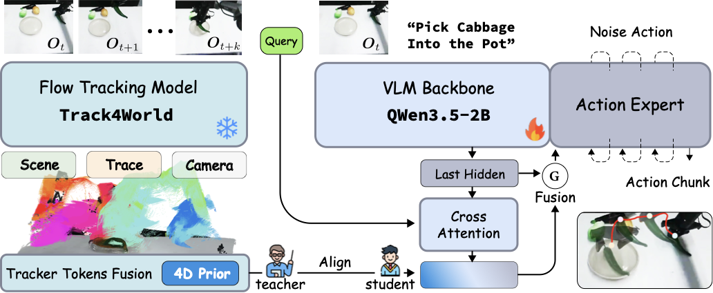

World-centric teacher
Track4World exposes scene geometry, 3D motion, visibility, and camera cues from short aligned video clips.
1Zhejiang University, China · 2Shanghai Jiao Tong University, China
3Shanghai Innovation Institute, China · 4Noematrix, China
chenyiwang@sii.edu.cn · siriusyang@sjtu.edu.cn
* Equal contribution · † Corresponding author
Track4Action distills action-aligned 3D world transitions from demonstration videos into a vision-language-action policy.

Track4Action aligns a frozen world-centric 3D tracker with the VLA hidden states and action head during training.
Vision-language-action (VLA) policies are strong at instruction grounding and broad-task generalization, but they often rely on weakly structured 2D observations and under-utilize explicit 3D motion cues. In contrast, world-centric trackers can recover geometry, visibility, and temporal correspondence, yet they are not directly executable as robot policies.
We present Track4Action, a framework for turning world-centric tracking into robot action prediction. A frozen Track4World teacher produces geometry-aware features from aligned demonstration clips. A VLA policy learns tracker-aligned query tokens from its own multimodal hidden states, and a shared flow-matching action head turns those features into action chunks. Crucially, the tracker is used only as training-time privileged supervision; future video and the tracker are removed during deployment.
Track4World exposes scene geometry, 3D motion, visibility, and camera cues from short aligned video clips.
Learnable query tokens read from the VLA hidden states and align with the frozen tracker representation.
The teacher is needed only during training. At inference, the policy uses the current observation, language, and learned aligned bottleneck.

Track4Action improves both in-distribution manipulation and robustness to unseen visual changes.
Demonstration videos can teach a policy both what to do and how the world should change, while enabling tracker-free deployment.
If you find this work useful, please consider citing:
@article{track4action,
title={Track4Action: Distilling World-Centric 3D Tracker into Vision-Language-Action Policies},
author={Wang, Chenyi and Wang, Xinkai and Lin, Bokai and Tian, Jialin and Zhang, Fucheng and Yang, Lixin and Lu, Cewu}
}